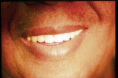

Michael A. Dzitzer, D.D.S.
Smile Design
Advanced Esthetic Restorative Dentistry
Cosmetic Oral Rehabilitation
Are you searching for a beautiful smile?
Concerned about discolored, crooked, worn, or broken teeth?
Do you suffer from missing teeth or uncomfortable, ill-fitting Dentures?
I CAN HELP YOU!
You are invited to my office for our initial consultation where we will sit down and uncover all your specific dental concerns. I will then formulate a plan of treatment with a clear, concise, practical, predictable, and BEAUTIFUL result.
I have placed great emphasis on my training and education, allowing me to provide for you every aspect of Contemporary Esthetic Restorative Dentistry, meeting your unique wants and requirements, be they basic or complex.
The added refinement of a beautiful, healthy smile and functional dentition leads to a happier more successful YOU!
I am very enthusiastic about my ability to provide for you Esthetic Restorative Dentistry, (I also call it Smile Design.) That excitement has allowed Esthetic Dentistry to be my "hobby" as well as my profession.
I began private practice in Somers Point, where I also reside with my lovely family (and oh yes, our cats and parrots too!). We all share a passion for our South Jersey beaches and boardwalks. We also enjoy tropical locales, scuba diving, photography, and antiques.
Professionally, I am a member of the American Dental Association, the New Jersey Dental Association, and the Atlantic - Cape May County Dental Society. I am a member of the Academy of General Dentistry, and have received the coveted Mastership level of accreditation.
Isn't this the kind of care you deserve? Thank you once again. Your Esthetic Dental concerns are very important to me.
Visit My Office
10 Kappella Avenue
Somers Point, NJ 08244
Hours: By Appointment
Phone: 609-927-9100
Before and After Gallery
Before |
|---|
 |
After |
|---|
 |
|  |
 |
 |
 |
Before |
|---|
 |
After |
|---|
 |
 |
 |
 |
 |
 |
Happy Patient Testimonies
I invite you to visit my YouTube channel to view all of my Happy Patient Testimonies.
Here is one of my many thank you notes that I have received from my patients. On our first visit together, if you prefer, you may peruse more testimonials in my office. On our first visit, we can take plenty of time to get to know each other. We can then discover your dental concerns and desires.
Mary Kate M. San Diego, CA
Written review from email 5/8/2012
"My husband and I moved to San Diego over 3 years ago. I wanted to tell you that when I go to the dentist out here they all compliment me on the work that you did. The result that you achieved is so natural looking, I love it, and the dental professionals are amazed. So much so that the dental hygienist that cleaned my teeth today told me that if anything should ever happen to my veneers that I should travel back to NJ to have you do the work. I told her that I absolutely would! But they are still in fine form. I just wanted to say thank you for all of your perfection and caring that you put into your work."
Philip B. Ocean View, NJ
5.0 star rating on Yelp 1/1/2013
"Dr. Dzitzer is amazing. Regarding both his impeccable skills and caring, compassionate bedside manner, you will not find a better dentist to meet your needs. After not having seen a dentist for decades our of sheer fear, I unfortunately needed major restorative, prosthetic work. After walking in his office with no teeth whatsoever I had a full set of teeth again in two weeks that look and feel wonderful. What sets Dr. Dzitzer apart from the rest is how he works to accommodate your schedule, even making appointments on holidays as well as his patience in explaining what he is doing and how and why he is doing it every step of the way. I am EXTREMELY happy that my oral surgeon recommended him, and I HIGHLY recommend Dr. Dzitzer."5.0 star rating on Yelp 2/16/2013
"It's been almost 2 months since I first saw Dr. Dzitzer upon referral from my oral surgeon, and I just want to reiterate that Dr. Mike is amazing. First of all, he schedules his office hours according to your schedule. He even saw me on weekends and a holiday. Secondly, he is extremely patient and explains every step of the process involving your case. His lab is on-site, and his work is exceptional. He is an absolute artist, and his expertise and knowledge are apparent when you see the results of his work. I highly recommend Dr. Mike; as someone who was always phobic when it came to dentists, I can assure you that he will set your mind at ease as he works with you. His office is relatively small, but that's just because your money will be put where your mouth is. Dr. Michael Dzitzer is excellent."
Jackie B. Cape May County, NJ
5.0 star rating on Google 7/8/2020
"My husband and I have been coming to this office for 30 years! Any time we needed immediate attention we were told to come right in, great results every visit! Highly recommend to anyone in need of dental care."Fran M. Ocean City, NJ
5.0 star rating on Google 6/27/2020
"My Mom dropped her dentures on the bathroom floor and they broke in two pieces down the center. She was going to just get a new pair because they never fit properly. Dr. Dzitzer fixed them while we waited about 20 min. He also took an impression of her mouth and readjusted them for her. They fit properly now! She had her dentures the same day since he has a lab right in his office!! He was wonderful."Debbie T. Mays Landing, NJ
5.0 star rating on Yelp 7/22/2018
"You'd be hard pressed to find a dentist more skilled in the art of reconstructive and general dentistry. Been a patient for many years and am beyond thankful to have been referred to him. Dr Dzitzer makes a dental visit a pleasant experience."
John L. Atlantic City, NJ
5.0 star rating on Yelp 2/18/2013
"For years, I wore dentures that were ill-fitting and awful to wear. After visiting Dr. Dzitzer for a relining, I have dentures that are comfortable, fit well (and with no denture adhesive) and look like the real thing. A recent visit for a cleaning was equally satisfactory."
Ed D. Mays Landing, NJ
5.0 star rating on Yelp 11/17/2012
"Great dentist. Incredibly accommodating. Will see you after hours, weekends, whatever is needed to ensure that you are taken care of. With Dr Dzitzer, the patient is first. Highly recommended."